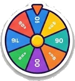

Spin & Spell
Spin the wheel. Steal the glory.
Wheel of fortune meets family game night. Spin and Spell hides a secret phrase on the TV, such as a movie, a place, or a famous idiom, with every letter blanked out. Spin the wheel on your phone for a point value, call a letter, and if it is in the phrase you bank the points for every time it appears. Land on Fever and your next letter pays double. Land on Bankrupt and watch your round winnings vanish. Know the answer? Solve it for a big bonus, but guess wrong and your turn is gone.
With more than two hundred phrases across categories like Movies and TV, Food and Drink, Famous Places, Idioms, Music, Sports, Around the House, and Animals and Nature, seasoned with global favourites, Spin and Spell delivers the exact drama that makes the format a classic, along with all the cheers and groans that come with it.
How it works
A masked phrase and its category appear on the TV. On your turn, spin the wheel on your phone to set a point value, then pick a letter. Correct letters reveal on the board and score you the wheel value for each occurrence. Spin again, or gamble on solving the whole phrase for a big bonus. Beware Bankrupt and Lose a Turn. Points bank when the puzzle is solved, and the highest score after all rounds wins.
Turn-based drama at its finest, rewarding both a sharp vocabulary and steady nerves.
Common questions
How do you play Spin and Spell?
Players take turns spinning a wheel for points, guessing letters in a hidden phrase, and choosing when to solve the whole puzzle for a bonus.
What happens if you land on Bankrupt?
Landing on Bankrupt wipes the points you have banked in the current round and passes the turn to the next player.
How many phrases are in the game?
There are more than two hundred phrases across eight categories, with a globally varied mix of topics.